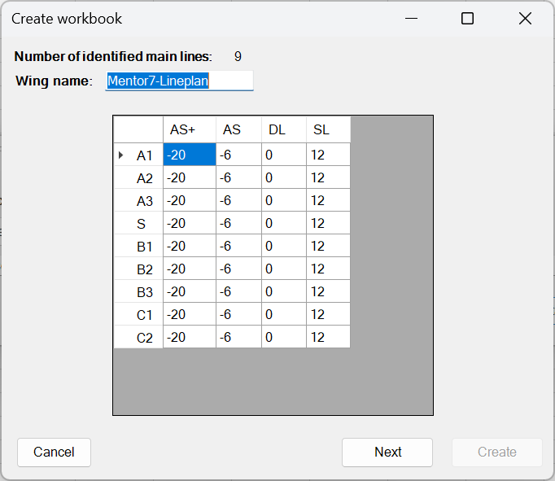

Manual for Production
This guide explains how to create a check workbook using WingChecker. It is intended for designers who possess the necessary input files required to generate the workbook.
Tip
If you are a checker, please refer to the Checkers' Manual for relevant instructions.
Preparing a New Check Workbook
To prepare a new check workbook:
- Launch Excel: Open a new instance of Microsoft Excel.
- Locate the Add-ins Tab: Navigate to the Add-ins section located on the ribbon.
- Create new Workbook: Click the Create Workbook button (located on the far left). A new form will appear.
- Select Input File: Click Select File, then navigate to the Excel file generated by WingDesigner for the respective wing.
- Load Data: Click Load Data. Once the data is successfully loaded, the second part of the form will become available and pre-filled with default values.
 - Optional Step: Input the Wing Name or retain the default name provided.
-
Configure Trim Setup: The table displayed defines the adjustments to line lengths. Rows correspond to main lines, while columns represent various trimming options.
Warning
Checkers are not able to modify this data.
Available trimming options
- AS+: Cow hitch with a single loop
- AS: Cow hitch only
- DL: Double loop (this is the default for new wings)
- SL: Single loop
-
Finalize the Workbook: Once all necessary configurations are made, click the Create button to generate the check workbook.
{kind=link}
{kind=link}
Evaluation Process
For information regarding the evaluation process, please refer to the Checkers' Manual.